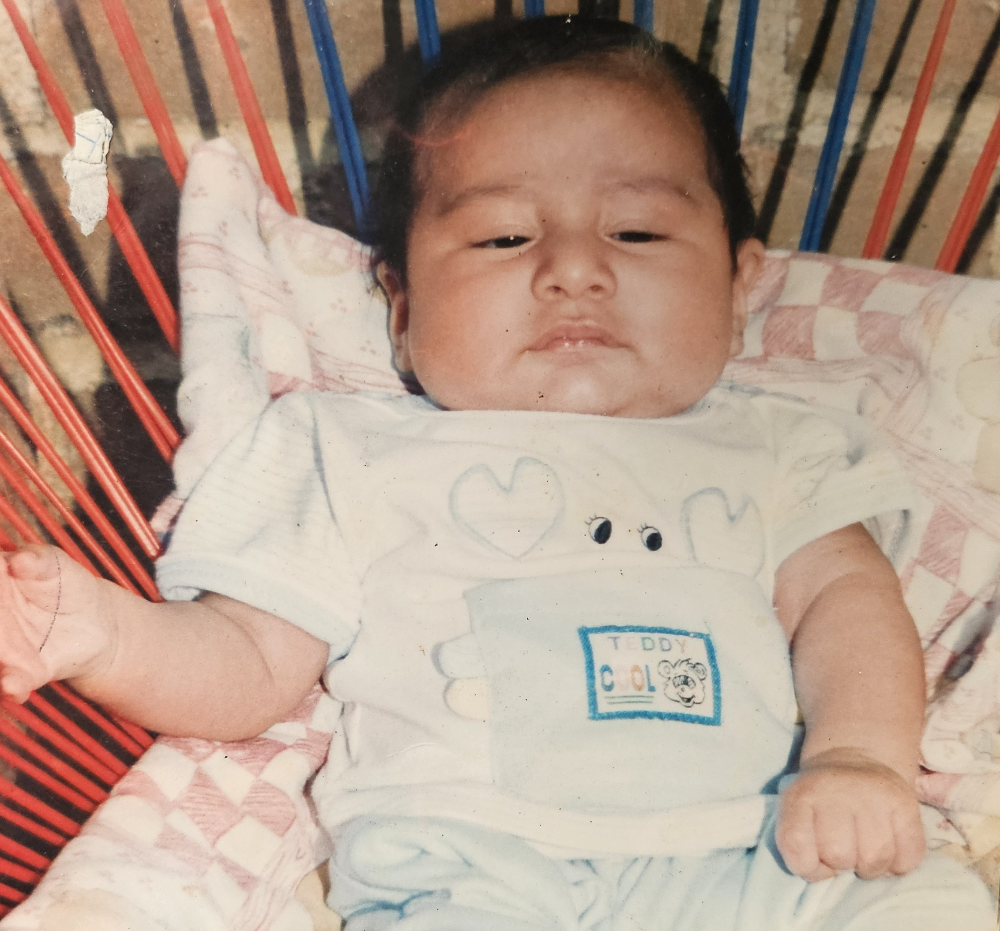

Childhood Stages
0-6 Years
As far as I can remember, when I was very young, I was quite different from other children. I was very serious and had low energy. I didn’t cry much—not even on my first day of kindergarten. In photos from that time, I always looked very serious.

Childhood Stages
6-12 Years
As I grew a little older, I became more playful. I started running around more and smiling more often. One of my favorite things was visiting my grandparents' farm, where I loved playing with my cousins and spending time with the puppies